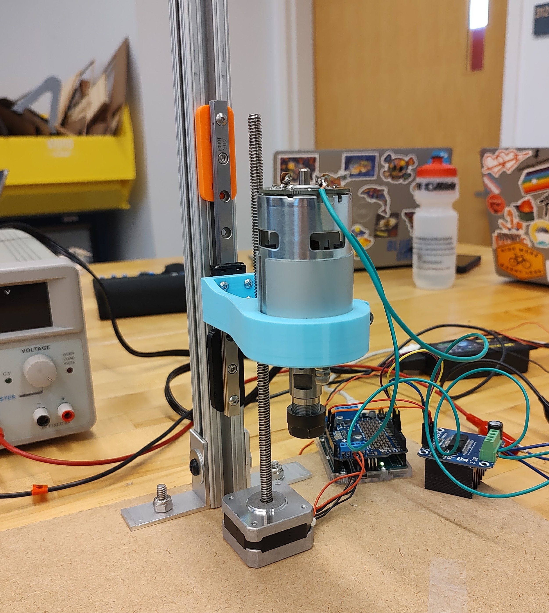

Sprint One - CNC Controlled Drill Press
Overview
In sprint 1, we focused on creating a drill press that can be controlled by a laptop and plunge to specified depths. This first goal served as a proof of concept for the mechanical, electrical, and software aspects of the project that we would continue to explore in future sprints.
Mechanical
Mechanically we focused on acquiring a usable spindle motor and compatible tool head. We initially took apart a couple drills in an attempt to take their drill chucks and motors. However, we opted to purchase a commercial motor and collet set to reduce future hassle in this regard. The entire tool head assembly remained relatively unchanged until the final project.
In order to produce linear movement in the z direction, we acquired a NEMA 17 motor with an attached lead screw from a small 3D printer we scavenged. After creating a simple mounting mechanism with a linear rail also taken from the 3D printer along with a piece of 8020 and a 3d printed fastener, we achieved vertical movement.
Electrical
Electrically we focused on wiring our Z axis stepper motor and DC motor to spin the tool head. We acquired the stepper motor from the parts of an old 3D printer, while we ordered the DC motor with a collet on Amazon. In this first sprint, we used an Arduino Uno with an Adafruit Motor Shield to control the stepper and our BTS7960 H-bridge DC motor controller for the tool head. In this sprint, we used a variable power supply to provide power to the tool head.
Software
In Sprint 1, we wrote some simple Arduino and Python scripts to integrate the Adafruit Motor Shield and DC controller to drive our stepper and spindle. The Python script opened a serial connection with the Arduino and began a keyboard listener. Number key presses set the spindle speed to a range of preset PWM values, while the up and down keys controlled the motion of the Z axis stepper and 'space' stopped the system.
The Arduino code was written to accept these keypresses and pass their commands through to the controllers, using the Adafruit Motor Shield and library to talk to the stepper and analog PWM control for the spindle.